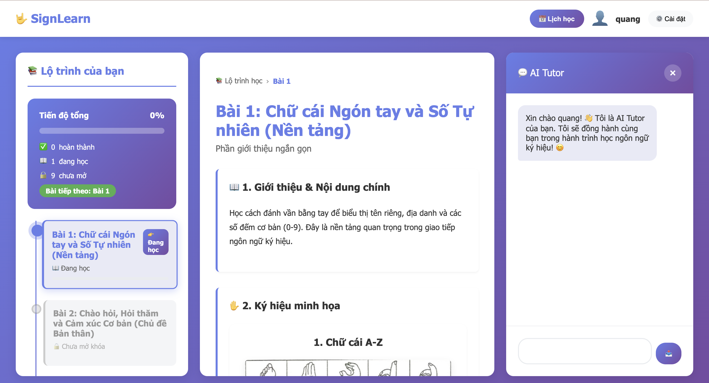

Featured Projects

Advanced LLM Reasoning
Improved 1B-parameter Small Language Model reasoning via SFT + RL, achieving better performance under constrained compute.
MATH500: +2.1% (23.9 → 26)
GSM8K: +7.2% (44.4 → 51.6)

SignLearn - AI Sign Language Tutor
Real-time sign language recognition and learning platform with gesture tracking and LLM-powered feedback
75% RAG Accuracy
4.68/5 Quality

Demand Forecasting System
Two-stage time series forecasting: TimesNet for latent demand recovery + DLinear for final prediction
31.94% WAPE
+15.7% Improvement